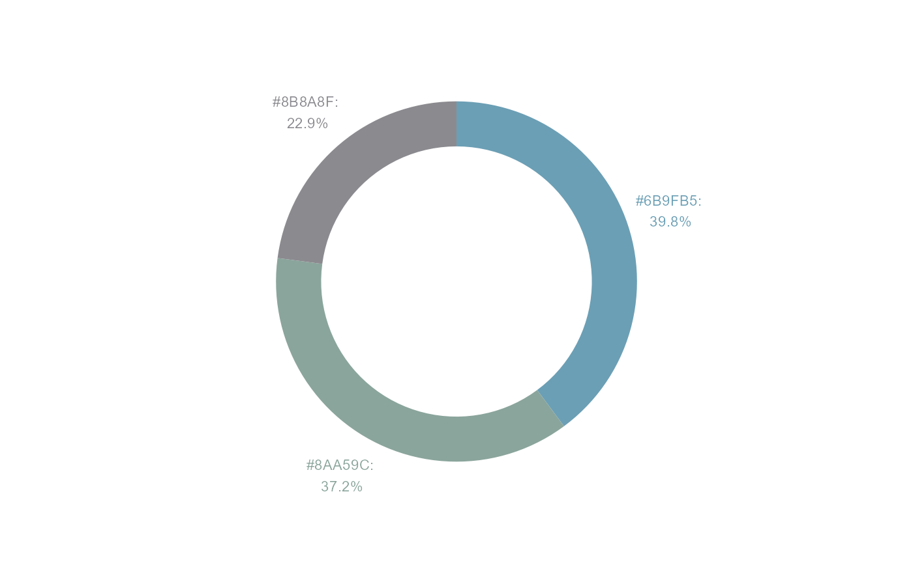
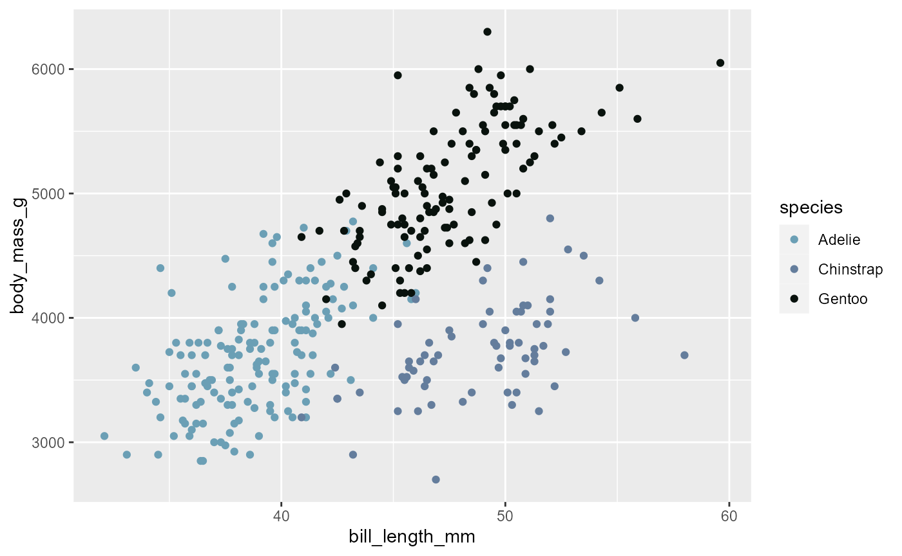

colourpickr-vignette
colourpickr-vignette.RmdWelcome to colourpickr!
The colourpickr package is made for anyone looking to
make their visualization more vibrant by applying colours they can
extract from real-life images! Users can easily extract the most
prominent colours available in an image and apply that to their
visualizations.
To use colourpickr in a project, we will first import the package as shown below:
# Load packages
library(colourpickr)Functions
colourpickr currently exposes four functions that give
the user the flexibility needed to extract colours from an image and
apply those in their visualization.
Example Image
We will be using the below image to demonstrate the various functions
of the colourpickr package.

Aerial view of UBC
get_color_palette
The function extracts the most common colors from an image specified by a URL and returns them as a data frame of hex codes and RGB values. The required parameters are img_url, tolerance, and limit, with force_return_limit being an optional parameter.
Parameters:img_url : A character string representing the image
URLlimit : The maximum number of colors to be returned
In the example below, we extract the 2 prominent colors from the example image above.
colours_df <-
get_color_palette("https://raw.githubusercontent.com/UBC-MDS/colourpycker/add_image/images/UBC_Aerial.jpg",
3)
colours_df
#> # A tibble: 3 × 6
#> red green blue hex col_freq col_share
#> <int> <int> <int> <chr> <int> <dbl>
#> 1 107 159 181 #6B9FB5 3072 0.00110
#> 2 100 125 156 #647D9C 1494 0.000534
#> 3 9 18 13 #09120D 561 0.000200
donut
This function creates a donut chart with information on the most common colors in the linked image. The user specifies the image, and the number of colors, and specifies the size of the resulting chart.
Parameters:img_url : string of the url of the image that you want to
pull colors fromnum_clrs : int of the number of colors you want to pull
from the imageplot_show : if TRUE will print the plot, default TRUE
In the example below, we plot a donut chart of the color composition of the image.
donut("https://i.imgur.com/s9egWBB.jpg", 3, FALSE)
scatterplot
This function creates a scatterplot using the colours selected from the image based on a data set of the users choosing.
Parameters:img_url URL of an image filedataset data.frame or tibblex unquoted column name to plot on the x-axis from data
data.frame or tibbley unquoted column name to plot on the y-axis from data
data.frame or tibblecolour unquoted column name to plot as the colour from data
data.frame or tibble
In the example below, we visualize a scatter plot for the palmerpenguins data set with colors extracted from the image.
plot <- scatterplot(
"https://raw.githubusercontent.com/UBC-MDS/colourpycker/add_image/images/UBC_Aerial.jpg",
palmerpenguins::penguins,
bill_length_mm,
body_mass_g,
species
)
plot
#> Warning: Removed 2 rows containing missing values (`geom_point()`).
negative
This function extracts the most common colours from an image (via URL) and inverts them to retrieve the negative version of a colour palette, returning the associated HEX codes and RGB values for each colour.
Parameters:img_url : A character string representing the image
URLlimit : The maximum number of colors to be returned
In the example below, we extract the 2 prominent colors from the example image above and invert them.
url <- "https://raw.githubusercontent.com/UBC-MDS/colourpycker/add_image/images/UBC_Aerial.jpg"
negative(url, 3)
#> # A tibble: 3 × 4
#> red green blue hex
#> <dbl> <dbl> <dbl> <chr>
#> 1 148 96 74 #94604A
#> 2 155 130 99 #9B8263
#> 3 246 237 242 #F6EDF2